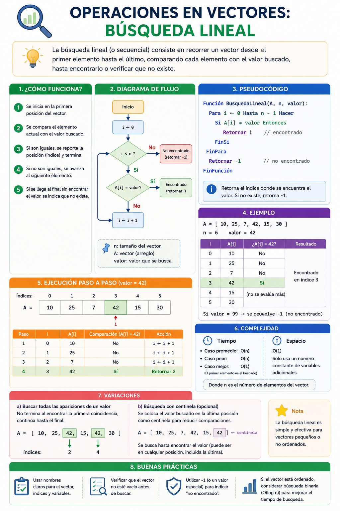

Imagina que en el hangar de almacenamiento hay una fila consecutiva de contenedores sellados y necesitas encontrar el que contiene el repuesto de hipernúcleo "ID-905". Como no están ordenados, el sistema informático activa un escáner que revisa el primer contenedor, luego el segundo, luego el tercero, y así de uno en uno hasta encontrar la pieza o confirmar que no existe. Esta técnica secuencial es la base de los motores de búsqueda de bases de datos primarias.
⚠️ Debes visualizar el video completo sin adelantar para desbloquear la evaluación.
Material audiovisual adaptado con fines estrictamente educativos. Créditos del autor: ProgramaTutos.

Una vez almacenados los datos dentro de un arreglo unidimensional, una de las necesidades más recurrentes del software es la localización de un elemento específico mediante un valor clave.
0, 1, 2... N-1) hasta hallar una coincidencia o llegar al final de la estructura (Joyanes Aguilar, 2013).N comparaciones, donde N es el tamaño total del arreglo.Verdadero en el momento exacto de la coincidencia, permitiendo interrumpir el recorrido o retornar la posición del índice hallado.Si aplicas una búsqueda lineal sobre un arreglo que contiene 500 registros y el elemento objetivo no se encuentra en la colección, ¿cuántas comparaciones obligatorias realizará el algoritmo?
¿Cuál es el rol académico de utilizar una variable de tipo "Bandera" (Flag) dentro de un ciclo de búsqueda lineal?
En base al ejemplo del hangar espacial, ¿cuál es la razón por la que se debe activar una búsqueda secuencial de uno en uno?
¿Cuáles son los límites de los índices que recorre de forma sucesiva el algoritmo de búsqueda lineal dentro de un vector de N elementos?
Según Joyanes Aguilar (2013), ¿qué define conceptualmente a la búsqueda lineal o secuencial?
¿Cuál es el peor de los escenarios posibles en cuanto a eficiencia temporal al ejecutar este algoritmo?
Cuando una variable de tipo Bandera conmuta su estado lógico a Verdadero durante el recorrido, ¿qué acción se permite realizar de forma inmediata?
En términos de complejidad algorítmica y eficiencia, si duplicamos la cantidad de datos (2N) en un vector desordenado, ¿qué ocurre con el número de comparaciones en el peor caso?
De acuerdo a Sznajdleder (2012), ¿cómo se controla el flujo posterior del algoritmo mediante el uso de la bandera?
¿Cuál de las siguientes opciones describe el verdadero propósito de los motores de búsqueda en bases de datos primarias que usan esta técnica?